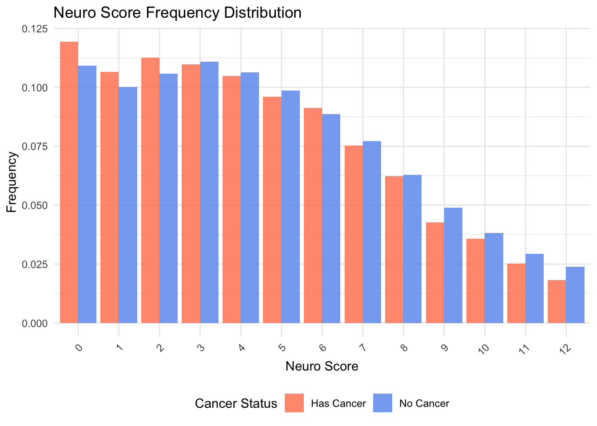
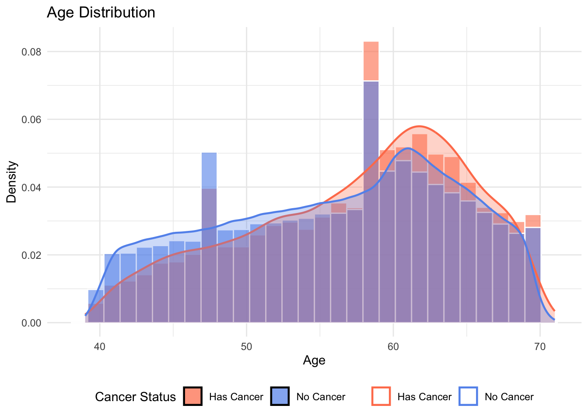
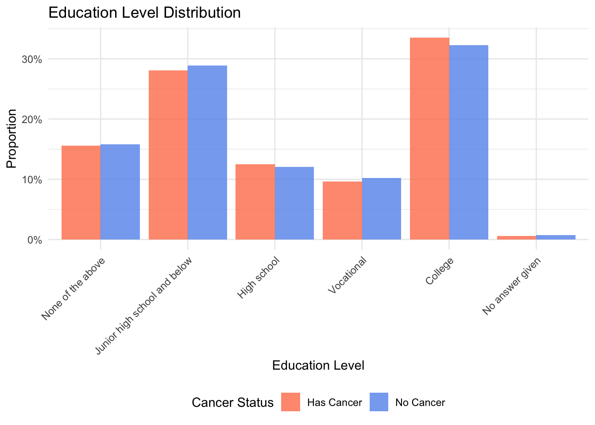
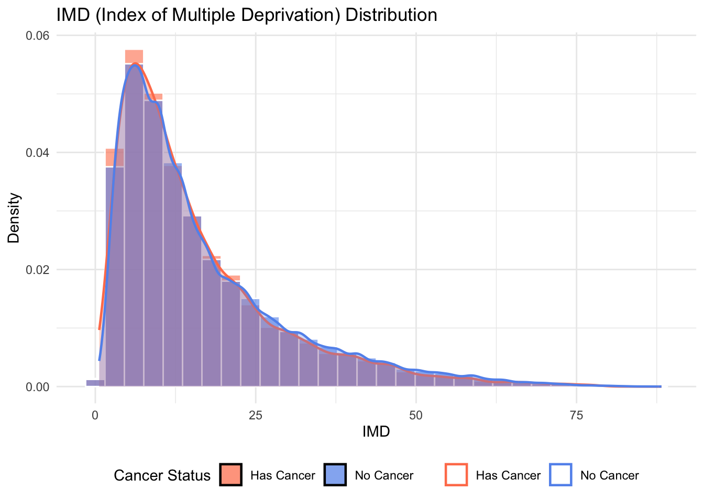
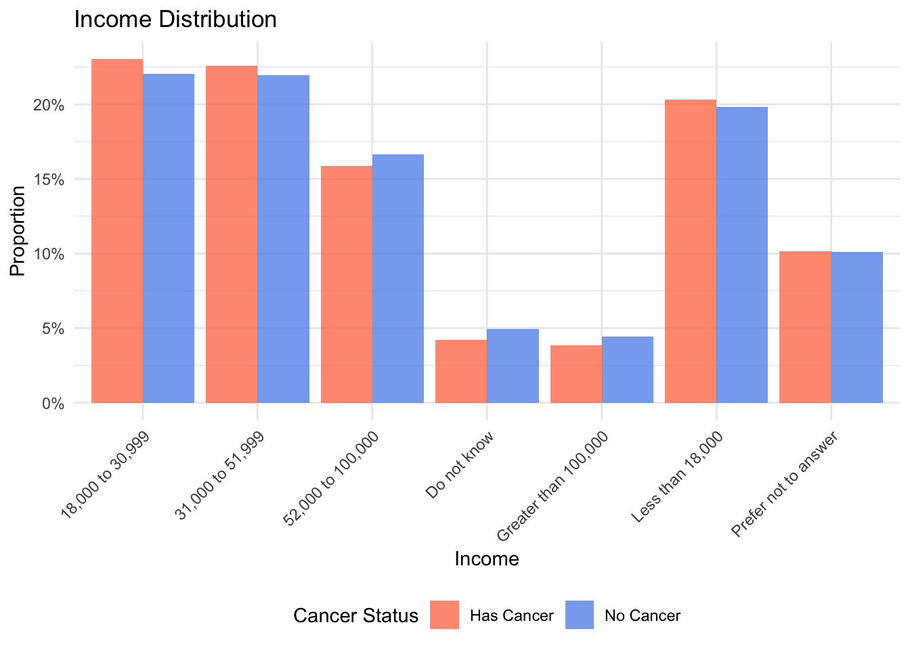
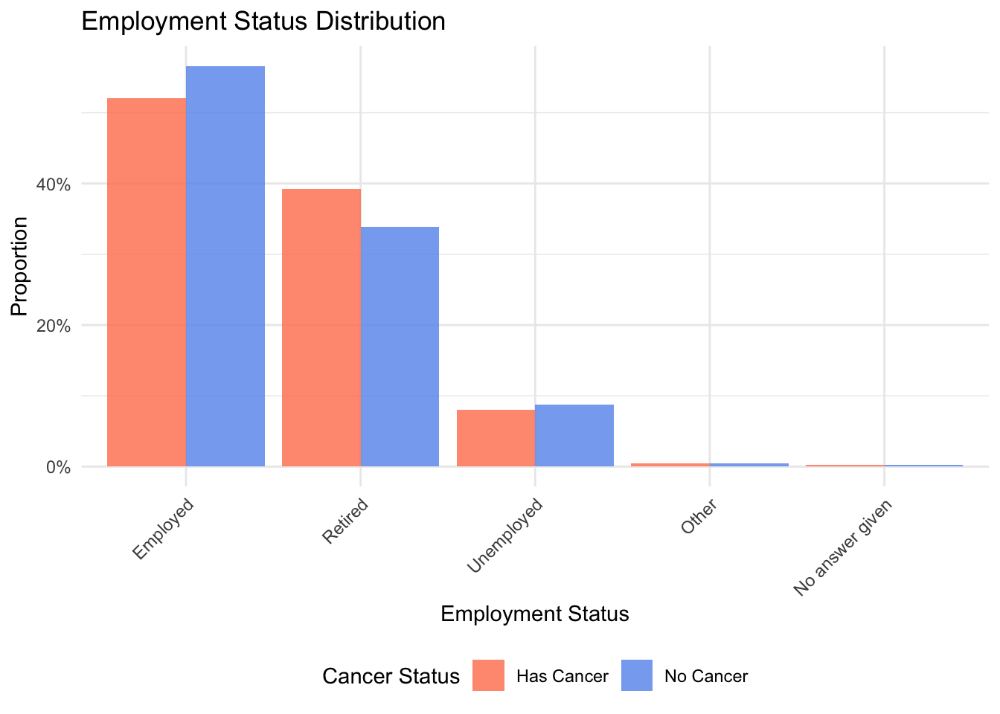
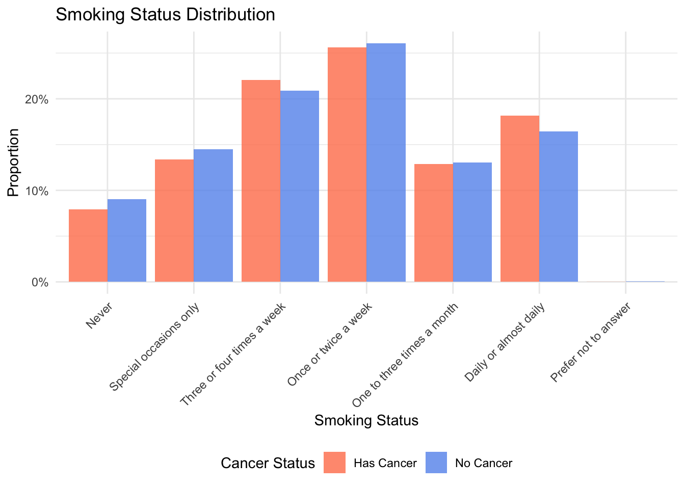
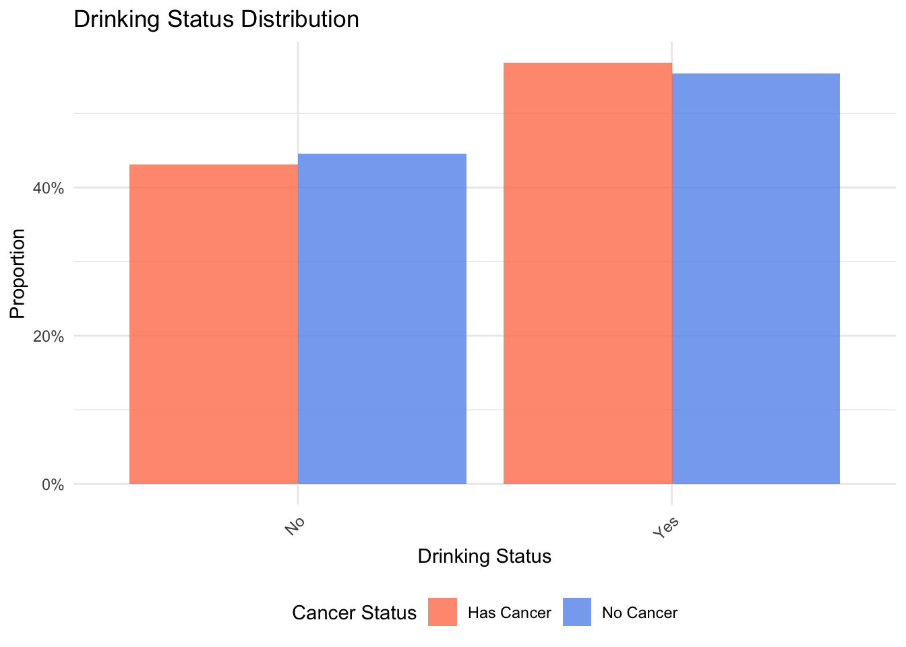
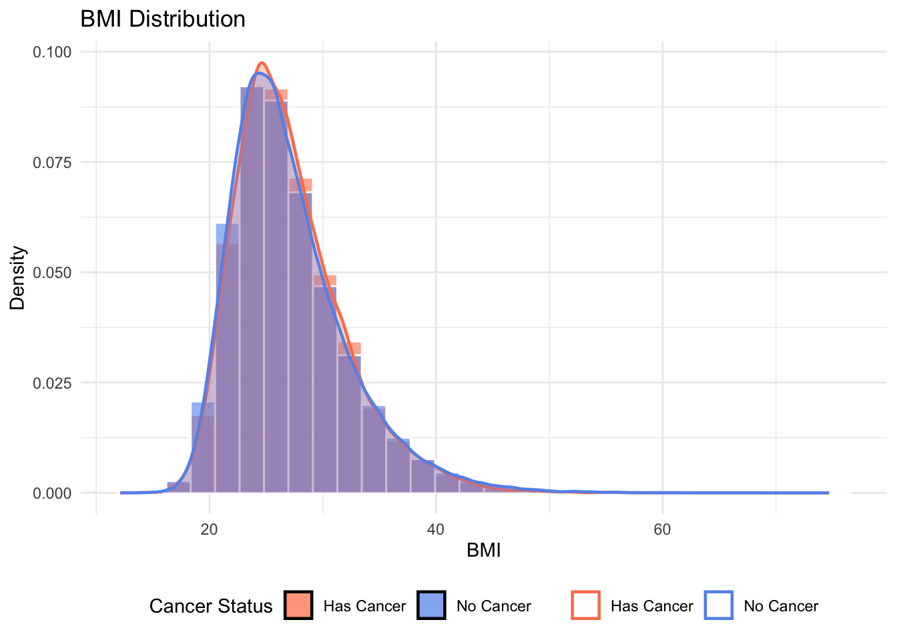
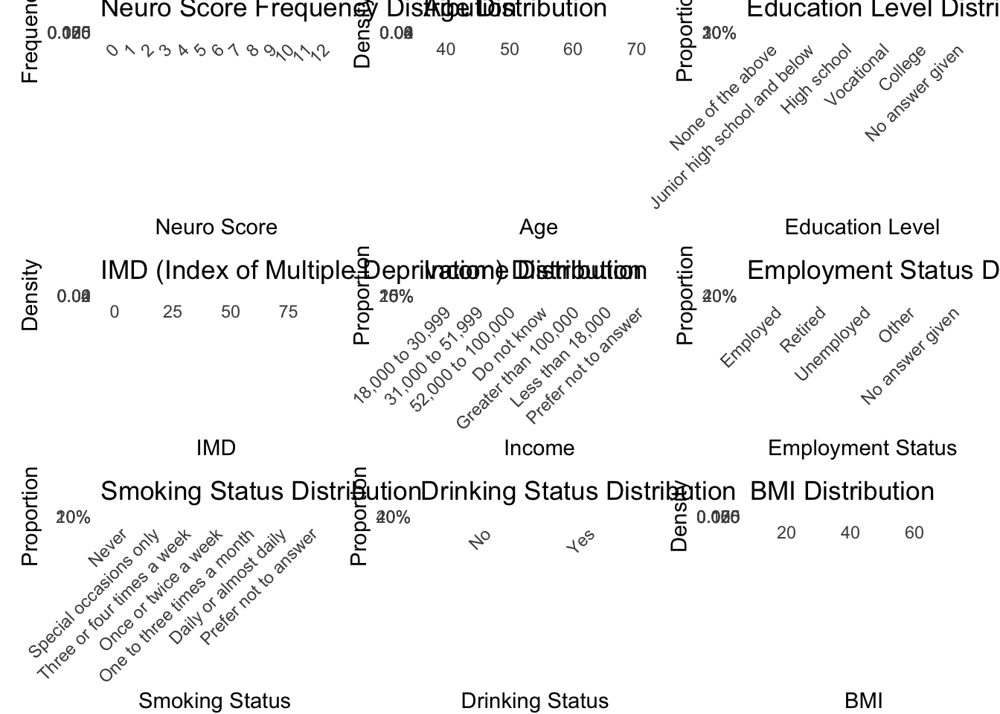

library(readxl)
library(dplyr)
library(writexl)
library(ggplot2)
library(dplyr)
data <- read_excel("Data/merged_data_with&without.xlsx")
data <- data %>%
mutate(cancer_status = ifelse(is.na(date1), "No Cancer", "Has Cancer"))%>%
mutate(cancer_status = factor(cancer_status))
data$edu_first <- sub("\\|.*$", "", data$edu)
data1 <- data %>%
mutate(
edu_level = case_when(
# 捕获所有A Level/AS Level变体（不区分大小写）
grepl("A levels?|AS levels?|Advanced Level",edu_first, ignore.case = TRUE) ~ "High school",
grepl("O levels?|GCSEs?|CSEs?", edu_first, ignore.case = TRUE) ~ "Junior high school and below",
grepl("College or University degree?", edu_first, ignore.case = TRUE) ~ "College",
grepl("NVQ？|HNC|Certificate|Diploma|Professional Qualification", edu_first, ignore.case = TRUE) ~ "Vocational",
grepl("Prefer not to answer", edu_first, ignore.case = TRUE) ~ "No answer given",
is.na(edu_first) ~ "No answer given",
# 默认保留原值（可根据需要修改）
TRUE ~ as.character(edu_first)
)
)
data1 <- data1 %>%
mutate(
# 处理Neuro_score的非标准缺失值
Neuro_score = ifelse(Neuro_score %in% c("NA"), NA, Neuro_score),
Neuro_score = as.numeric(Neuro_score),
) %>%
# 删除关键变量的缺失值
filter(
!is.na(Neuro_score),
!is.na(smoke),
!is.na(drink),
!is.na(bmi),
!is.na(income),
!is.na(employ)
) %>%
# 创建imd和region变量
mutate(
imd = coalesce(imde, imds, imdw),
region = case_when(
!is.na(imde) ~ "England",
!is.na(imds) ~ "Scotland",
!is.na(imdw) ~ "Wales",
TRUE ~ NA_character_
)
) %>%
select(-imde, -imds, -imdw) %>%
mutate(
# 将分类变量转换为因子
edu_level = as.factor(edu_level),
region = as.factor(region)
)
data1 <- data1 %>%
mutate(diag_prof = ifelse(is.na(diag_prof), 0, 1))
data1 <- data1 %>%
mutate(
employ = case_when(
grepl("In paid employment?", employ, ignore.case = TRUE) ~ "Employed",
grepl("Retired?", employ, ignore.case = TRUE) ~ "Retired",
grepl("Full or part-time student|Doing unpaid or voluntary work|Looking after home?|Unemployed|Unable to work?", employ, ignore.case = TRUE) ~ "Unemployed",
grepl("Prefer not to answer", employ, ignore.case = TRUE) ~ "No answer given",
# 默认保留原值（可根据需要修改）
TRUE ~ "Other"
),
# 转换为因子并指定水平顺序
employ = factor(
employ,
levels = c(
"Employed",
"Retired",
"Unemployed",
"Other",
"No answer given"
)
)
)descriptive graph
##读取处理好的数据集
##画图
library(tidyverse)── Attaching core tidyverse packages ──────────────────────── tidyverse 2.0.0 ──
✔ forcats 1.0.0 ✔ stringr 1.5.1
✔ lubridate 1.9.4 ✔ tibble 3.3.0
✔ purrr 1.1.0 ✔ tidyr 1.3.1
✔ readr 2.1.5
── Conflicts ────────────────────────────────────────── tidyverse_conflicts() ──
✖ dplyr::filter() masks stats::filter()
✖ dplyr::lag() masks stats::lag()
ℹ Use the conflicted package (<http://conflicted.r-lib.org/>) to force all conflicts to become errorslibrary(patchwork)
library(ggpubr)
# 定义颜色方案
cancer_colors <- c("No Cancer" = "#6495ED", "Has Cancer" = "#ff7f59")
# 1. Neuro_score (离散变量) - 使用条形图（频率）
neuro_freq <- data1 %>%
group_by(Neuro_score, cancer_status) %>%
tally() %>%
group_by(cancer_status) %>%
mutate(freq = n / sum(n))
p1 <- ggplot(neuro_freq, aes(x = factor(Neuro_score), y = freq, fill = cancer_status)) +
geom_bar(stat = "identity", position = "dodge", alpha = 0.8) +
scale_fill_manual(values = cancer_colors) +
labs(title = "Neuro Score Frequency Distribution",
x = "Neuro Score", y = "Frequency", fill = "Cancer Status") +
theme_minimal() +
theme(legend.position = "bottom",
axis.text.x = element_text(angle = 45, hjust = 1))
# 2. age (连续变量) - 使用直方图+密度曲线
p2 <- ggplot(data1, aes(x = age, fill = cancer_status, color = cancer_status)) + # 添加color映射
geom_histogram(aes(y = after_stat(density)),
position = "identity", alpha = 0.6,
bins = 30, color = "white") +
geom_density(alpha = 0.3, linewidth = 0.8) +
scale_fill_manual(values = cancer_colors) +
scale_color_manual(values = cancer_colors) + # 手动设置颜色
labs(title = "Age Distribution",
x = "Age", y = "Density", fill = "Cancer Status", color = NULL) +
theme_minimal() +
theme(legend.position = "bottom")
# 3. edu_level (分类变量) - 使用条形图（频率）
edu_levels_order <- c("None of the above", "Junior high school and below", "High school", "Vocational", "College", "No answer given")
# 将 edu_level 转换为有序因子
data1 <- data1 %>%
mutate(edu_level = factor(edu_level, levels = edu_levels_order))
# 计算教育水平的频率
edu_freq <- data1 %>%
drop_na(edu_level) %>%
count(cancer_status, edu_level) %>%
group_by(cancer_status) %>%
mutate(prop = n / sum(n))
p3 <- ggplot(edu_freq, aes(x = edu_level, y = prop, fill = cancer_status)) +
geom_bar(stat = "identity", position = "dodge", alpha = 0.8) +
scale_fill_manual(values = cancer_colors) +
scale_y_continuous(labels = scales::percent) +
labs(title = "Education Level Distribution",
x = "Education Level", y = "Proportion", fill = "Cancer Status") +
theme_minimal() +
theme(axis.text.x = element_text(angle = 45, hjust = 1),
legend.position = "bottom")
# 4. imd (连续变量) - 使用直方图+密度曲线
p4 <- ggplot(data1, aes(x = imd, fill = cancer_status, color = cancer_status)) +
geom_histogram(aes(y = after_stat(density)),
position = "identity", alpha = 0.6,
bins = 30, color = "white") +
geom_density(alpha = 0.3, linewidth = 0.8) +
scale_fill_manual(values = cancer_colors) +
scale_color_manual(values = cancer_colors) +
labs(title = "IMD (Index of Multiple Deprivation) Distribution",
x = "IMD", y = "Density", fill = "Cancer Status", color = NULL) +
theme_minimal() +
theme(legend.position = "bottom")
# 5. income (分类变量) - 使用条形图（频率）
income_freq <- data1 %>%
drop_na(income) %>%
count(cancer_status, income) %>%
group_by(cancer_status) %>%
mutate(prop = n / sum(n))
p5 <- ggplot(income_freq, aes(x = income, y = prop, fill = cancer_status)) +
geom_bar(stat = "identity", position = "dodge", alpha = 0.8) +
scale_fill_manual(values = cancer_colors) +
scale_y_continuous(labels = scales::percent) +
labs(title = "Income Distribution",
x = "Income", y = "Proportion", fill = "Cancer Status") +
theme_minimal() +
theme(axis.text.x = element_text(angle = 45, hjust = 1),
legend.position = "bottom")
# 6. employ (分类变量) - 使用条形图（频率）
employ_freq <- data1 %>%
drop_na(employ) %>%
count(cancer_status, employ) %>%
group_by(cancer_status) %>%
mutate(prop = n / sum(n))
p6 <- ggplot(employ_freq, aes(x = employ, y = prop, fill = cancer_status)) +
geom_bar(stat = "identity", position = "dodge", alpha = 0.8) +
scale_fill_manual(values = cancer_colors) +
scale_y_continuous(labels = scales::percent) +
labs(title = "Employment Status Distribution",
x = "Employment Status", y = "Proportion", fill = "Cancer Status") +
theme_minimal() +
theme(axis.text.x = element_text(angle = 45, hjust = 1),
legend.position = "bottom")
# 7. smoke (分类变量) - 使用条形图（频率）
smoke_order <- c("Never", "Special occasions only", "Three or four times a week", "Once or twice a week", "One to three times a month", "Daily or almost daily", "Prefer not to answer")
# 将 smoke 转换为有序因子
data1 <- data1 %>%
mutate(smoke = factor(smoke, levels = smoke_order))
# 计算吸烟频率的频率
smoke_freq <- data1 %>%
drop_na(smoke) %>%
count(cancer_status, smoke) %>%
group_by(cancer_status) %>%
mutate(prop = n / sum(n))
p7 <- ggplot(smoke_freq, aes(x = smoke, y = prop, fill = cancer_status)) +
geom_bar(stat = "identity", position = "dodge", alpha = 0.8) +
scale_fill_manual(values = cancer_colors) +
scale_y_continuous(labels = scales::percent) +
labs(title = "Smoking Status Distribution",
x = "Smoking Status", y = "Proportion", fill = "Cancer Status") +
theme_minimal() +
theme(axis.text.x = element_text(angle = 45, hjust = 1),
legend.position = "bottom")
# 8. drink (分类变量) - 使用条形图（频率）
drink_freq <- data1 %>%
drop_na(drink) %>%
count(cancer_status, drink) %>%
group_by(cancer_status) %>%
mutate(prop = n / sum(n))
p8 <- ggplot(drink_freq, aes(x = drink, y = prop, fill = cancer_status)) +
geom_bar(stat = "identity", position = "dodge", alpha = 0.8) +
scale_fill_manual(values = cancer_colors) +
scale_y_continuous(labels = scales::percent) +
labs(title = "Drinking Status Distribution",
x = "Drinking Status", y = "Proportion", fill = "Cancer Status") +
theme_minimal() +
theme(axis.text.x = element_text(angle = 45, hjust = 1),
legend.position = "bottom")
# 9. bmi (连续变量) - 使用直方图+密度曲线
p9 <- ggplot(data1, aes(x = bmi, fill = cancer_status, color = cancer_status)) +
geom_histogram(aes(y = after_stat(density)),
position = "identity", alpha = 0.6,
bins = 30, color = "white") +
geom_density(alpha = 0.3, linewidth = 0.8) +
scale_fill_manual(values = cancer_colors) +
scale_color_manual(values = cancer_colors) +
labs(title = "BMI Distribution",
x = "BMI", y = "Density", fill = "Cancer Status", color = NULL) +
theme_minimal() +
theme(legend.position = "bottom")
p1
p2
p3
p4Warning: Removed 5195 rows containing non-finite outside the scale range
(`stat_bin()`).Warning: Removed 5195 rows containing non-finite outside the scale range
(`stat_density()`).
p5
p6
p7
p8
p9
# 组合所有图形 (3x3布局)
combined_plot <- (p1 + p2 + p3) /
(p4 + p5 + p6) /
(p7 + p8 + p9) +
plot_annotation(title = "Health Factors Comparison by Cancer Status",
subtitle = "Frequency distribution of key variables in cancer vs non-cancer groups",
theme = theme(plot.title = element_text(size = 16, face = "bold", hjust = 0.5),
plot.subtitle = element_text(size = 12, hjust = 0.5))) +
plot_layout(guides = "collect") &
theme(legend.position = "bottom")
# 保存图形
ggsave("descriptive_graph.png", combined_plot,
width = 16, height = 18, dpi = 300, bg = "white")Warning: Removed 5195 rows containing non-finite outside the scale range (`stat_bin()`).
Removed 5195 rows containing non-finite outside the scale range
(`stat_density()`).# 显示图形
combined_plotWarning: Removed 5195 rows containing non-finite outside the scale range (`stat_bin()`).
Removed 5195 rows containing non-finite outside the scale range
(`stat_density()`).